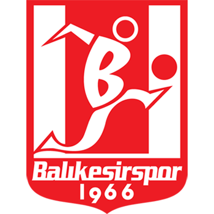

Gezilecek Yerler
Şehir Hakkında Bilgiler
| Nüfus: | Yaklaşık 1.250.000 |
|---|---|
| Yüzölçümü: | 14.292 km² |
| Bölgeler: | Hem Ege hem Marmara |
| Meşhur Yemekler: | Höşmerim, Balıkesir Kaymaklısı |
Kısa Tanıtım
Balıkesir, Türkiye'nin en kalabalık on yedinci şehridir. Hem Marmara hem de Ege Denizi'ne kıyısı olması şehri stratejik ve turistik açıdan çok değerli kılar. Tarım ve hayvancılığın yanı sıra turizm potansiyeliyle de Türkiye'nin parlayan yıldızlarından biridir.
Daha Fazla BilgiŞehrimizin Takımı: Balıkesirspor

Balıkesirspor Kulübü
1966 yılında kurulan, kırmızı-beyaz renklere gönül vermiş şehrimizin en köklü spor kulübüdür.
- Kuruluş Yılı: 1966
- Renkler: Kırmızı - Beyaz
- Stadyum: Balıkesir Atatürk Stadyumu
- Branşlar: Futbol, Basketbol, Tekerlekli Sandalye Basketbol